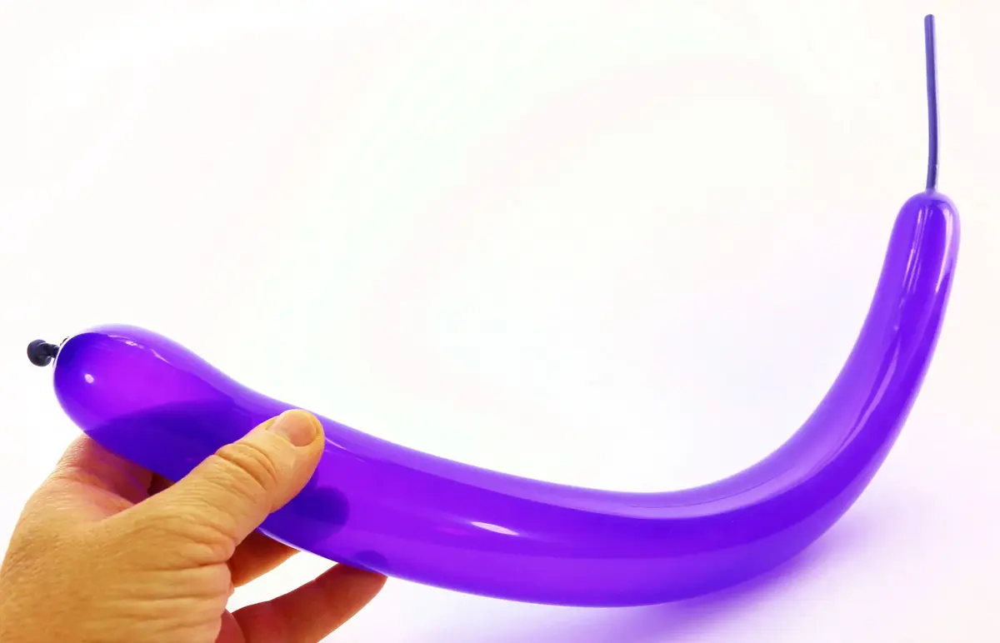
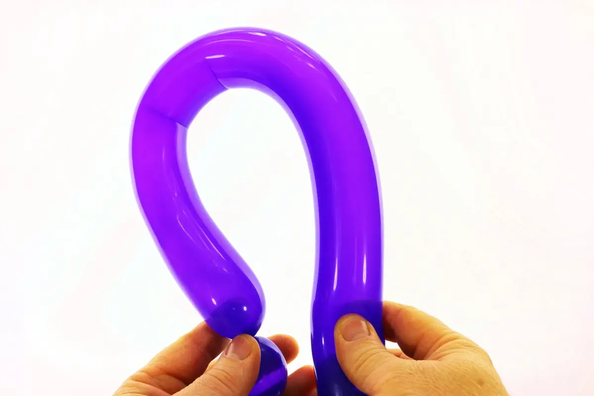
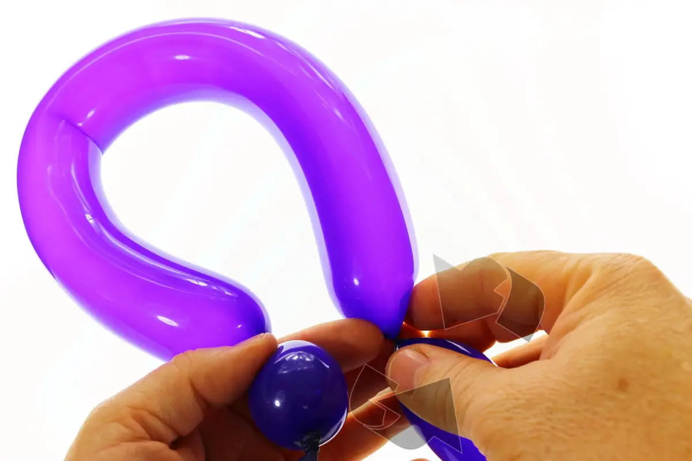
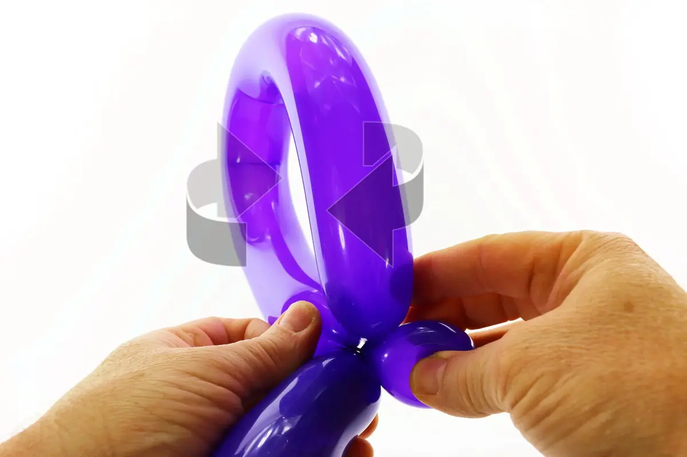
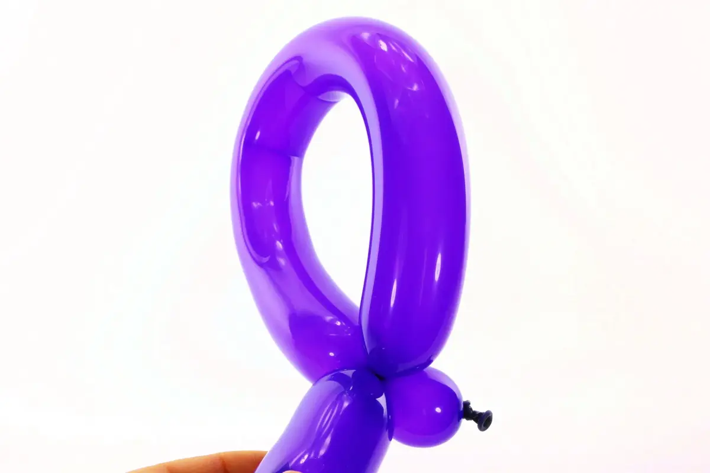
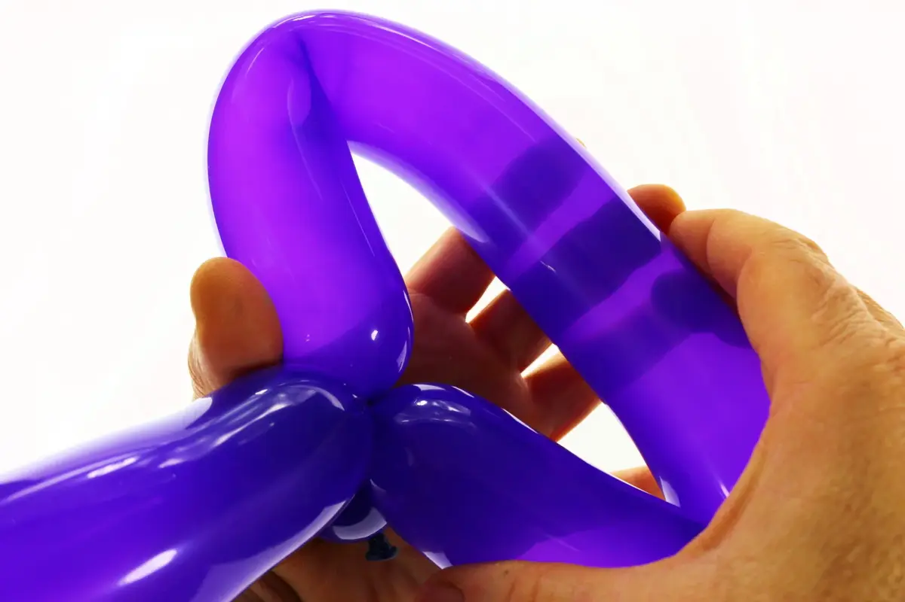
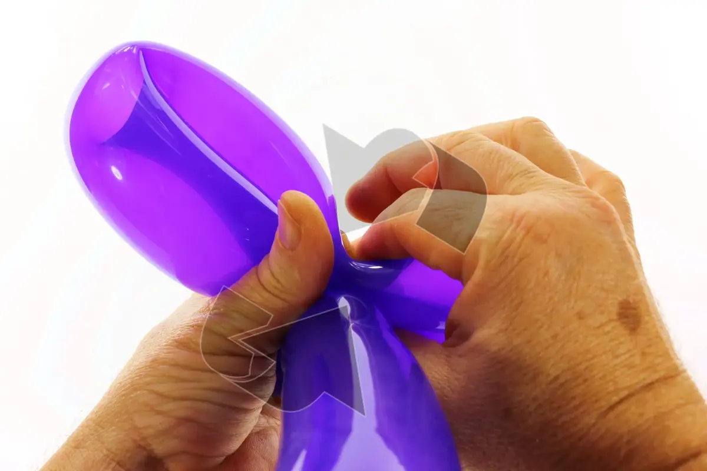
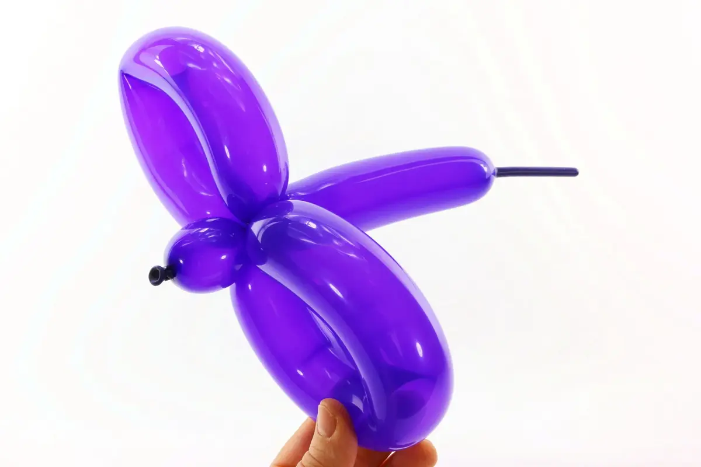

Después de la burbuja, eso es sin duda la más sencilla de todas las técnicas básicas de la globoflexia. Esta técnica se utiliza habitualmente en muchas formas de globo y en particular en esta serie de iniciación para hacer el sable, la rana, el pingüino, etc.
En algunos casos, si es suficientemente grande y no demasiado comprimido, un bucle puede ser en sí mismo dividido en dos para formar dos nuevos bucles más pequeños, como veremos al final de este tutorial.
1- Para practicar, inflar un globo, no importa la longitud.2- Luego empezar por una burbuja, no importa el tamaño3-Con el segmento de globo que sigue la burbuja, formar un bucle amplio.4- Para demarcar la longitud del bucle, presionar en el globo y girar (igual que para formar una burbuja).5- Bloquear la burbuja contra el segmento de globo que queda y girar la burbuja varias veces al nivel de su base.6- Así se obtiene un bucle. ¡Es tan fácil!7- Si el bucle es suficientemente grande y flexible (no demasiado comprimido), se puede dividir en dos. Basta con aplastar el bucle para acercar el centro de su base... Basta con aplastar el bucle para acercar el centro de su base…8- Comprimir el centro del bucle contra su base para formar un doblez (y el esbozo de dos pequeños bucles) luego hacer girar las dos pequeños bucles en su base para bloquear el conjunto. 9- Aquí tenemos nuestros dos pequeños bucles! ¡Hasta pronto! Para otra lección... ¡Con Môssieur Ballon!